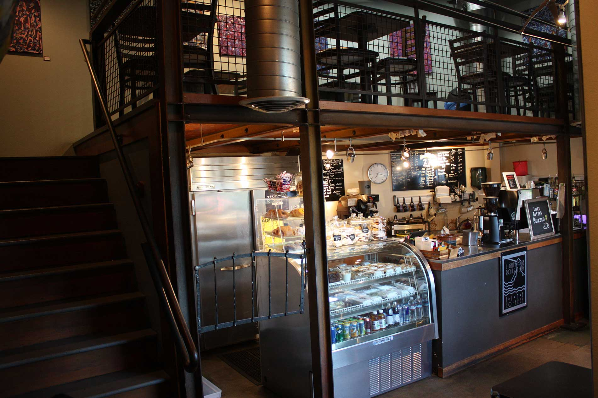
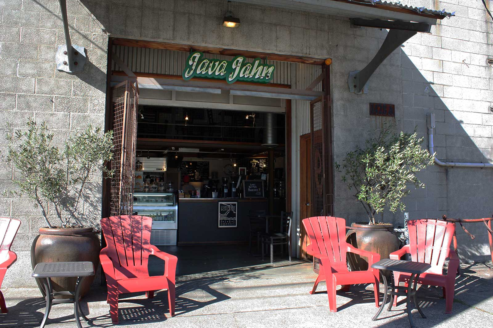
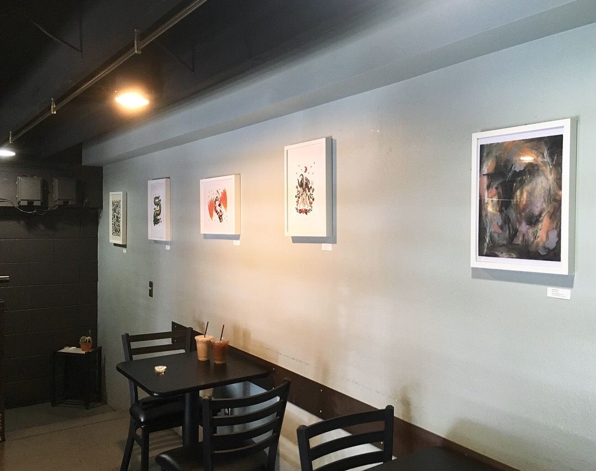
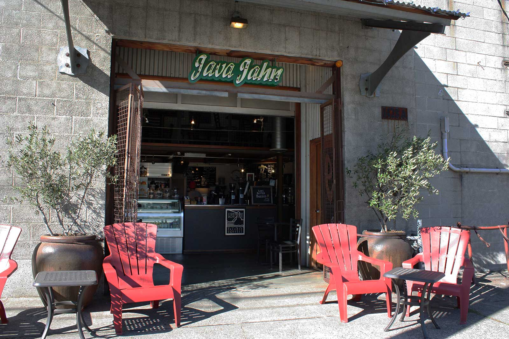
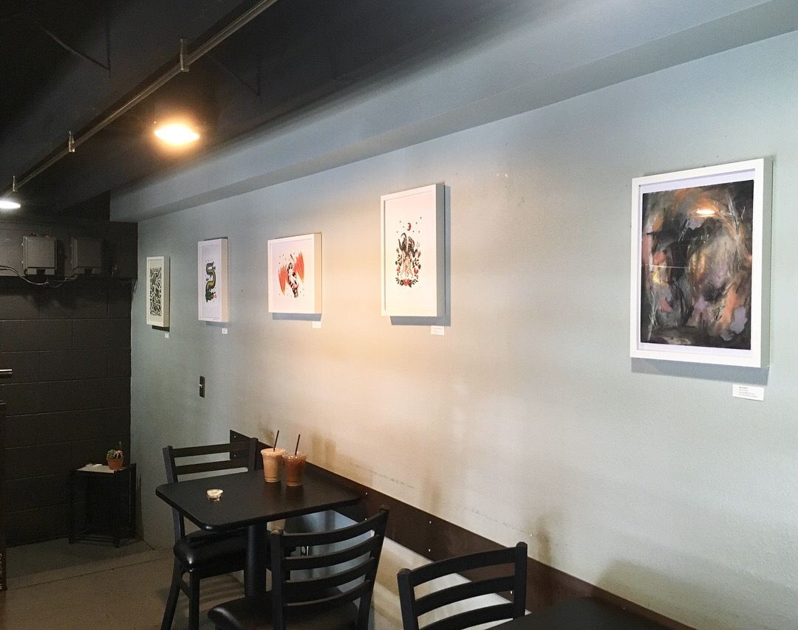
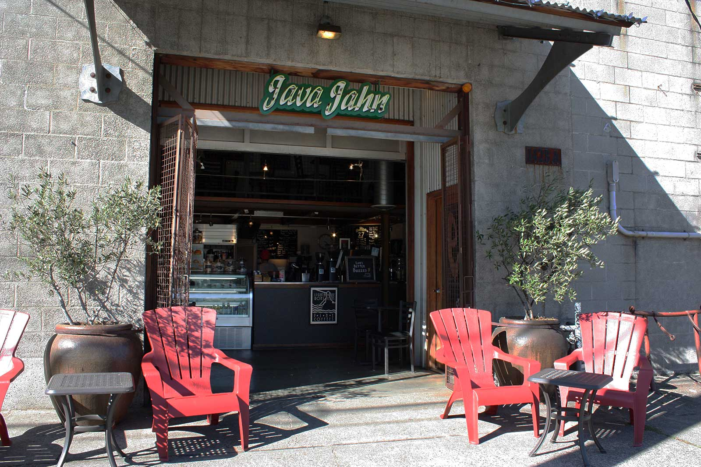
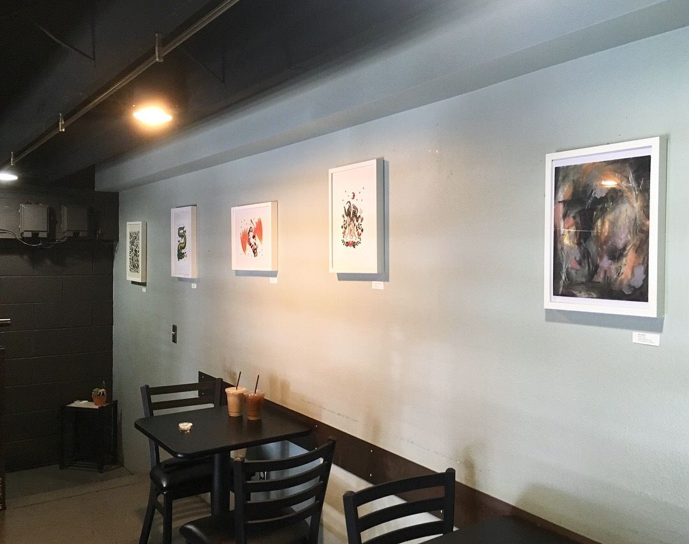
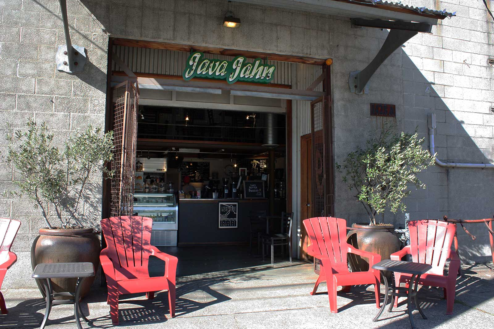
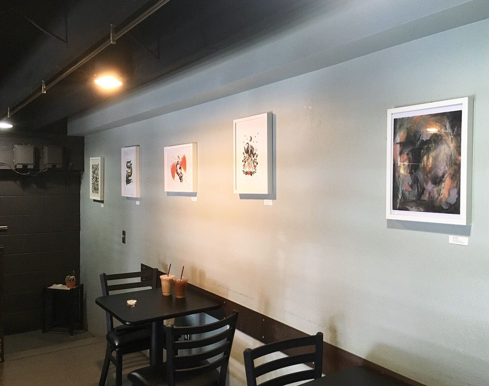

 







Serving locals for over 20 years in the historic industrial area of Old Ballard, Java Jahn has earned a reputation for consistently delicious coffee, token regulars, and friendly service. With baristas that remember your name and drink order with a smile, you’ll come in for the coffee and come back for the charm.
★★★★★
★★★★★
★★★★★


If you lived in Seattle in the 1990s and were looking for a good cup of coffee served with care by a sassy barista, you would look no further than Patty Jahn and her coffee cart outside of the old Doc Freeman’s in Ballard. A local to Ballard herself, Patty was quick to make friends with the neighbors and garner a loyal following of patrons who began to see the cart as home. Ambitious and hardworking, what started out as a coffee cart soon transitioned into a full café when Patty decided to purchase the building across the street. 27 Years later, Java Jahn continues to deliver personalized and memorable experiences that remain true to its roots.


This website is NOT an official website of Java Jahn Espresso - redesigned by Yuki Nagano who is a Software Engineer in Seattle,
who is a big fan of Java Jahn. She learned programming by self-taught, and this website is one of her projects designing an existing website from scratch.
To reach out to the real website of JavaJahn, please reach out to the contact above.
If you're interested in my work, visit my portfolio :)
A Big love to Java Jahn!
“Places like this becoming more rare. The baristas are friendly, will chat with you. Lighthouse coffee roast coffee hard to beat.”
★★★★☆